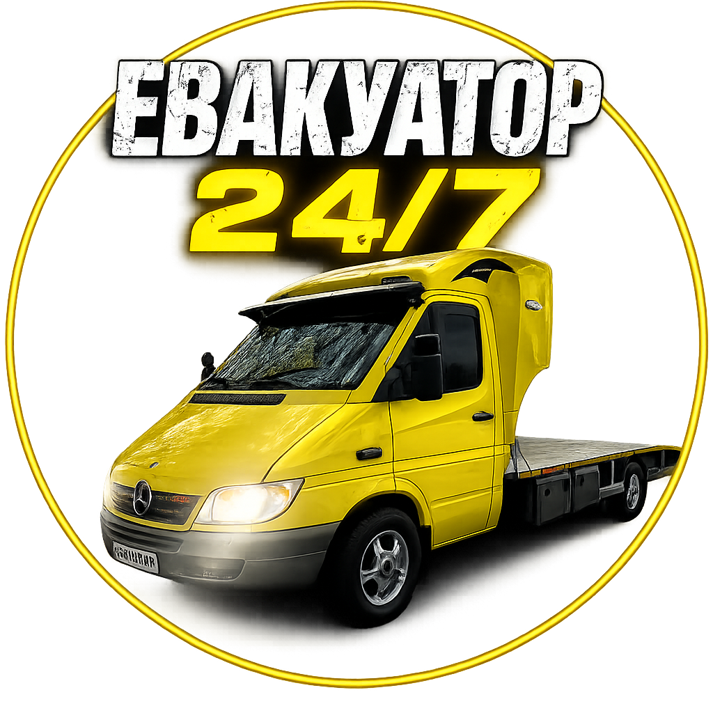
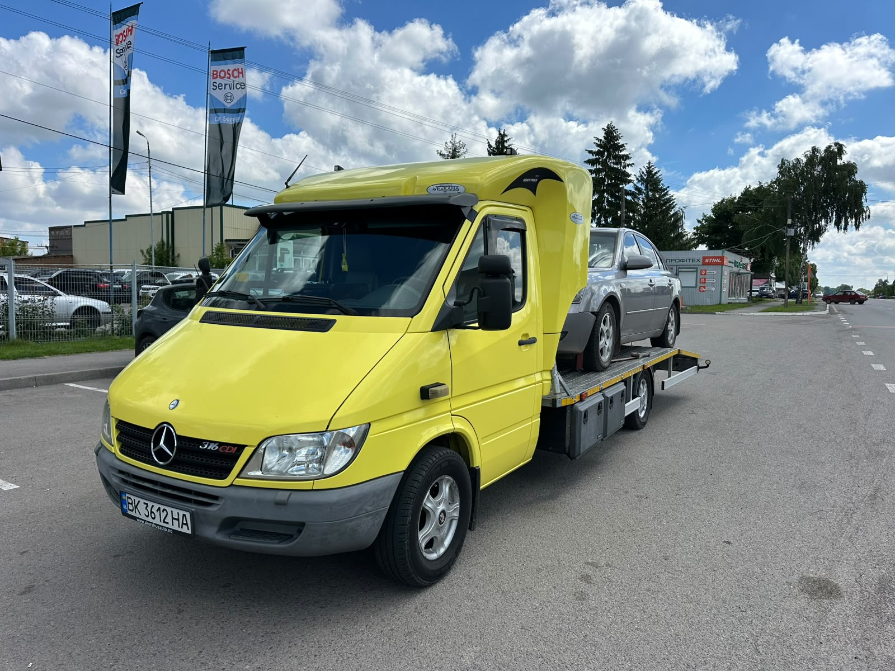
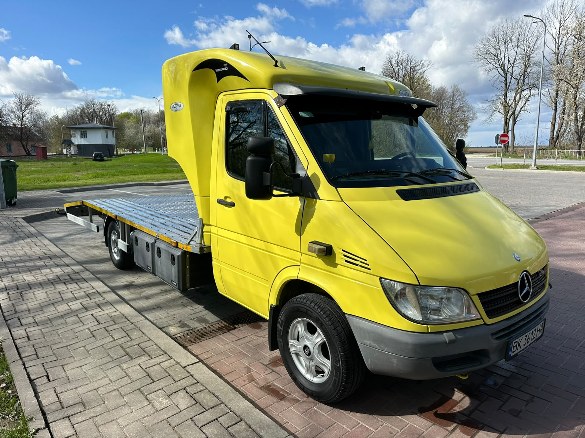
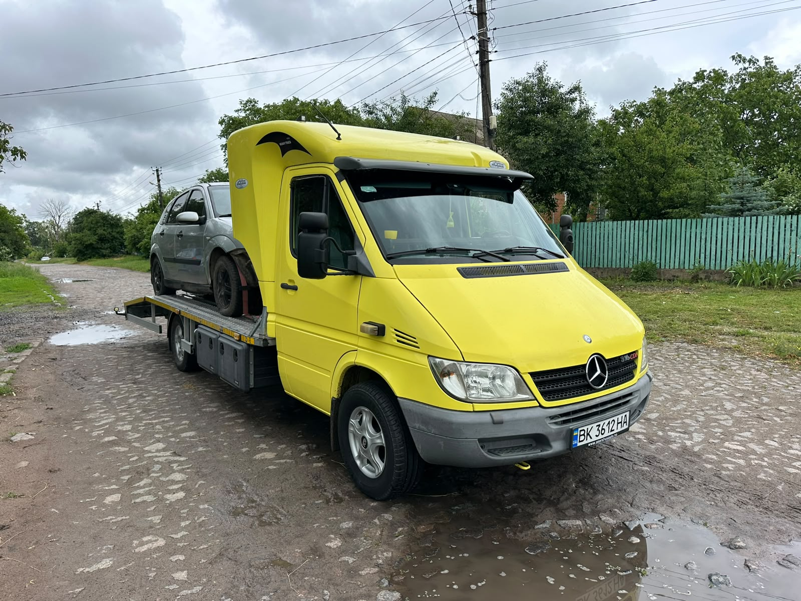
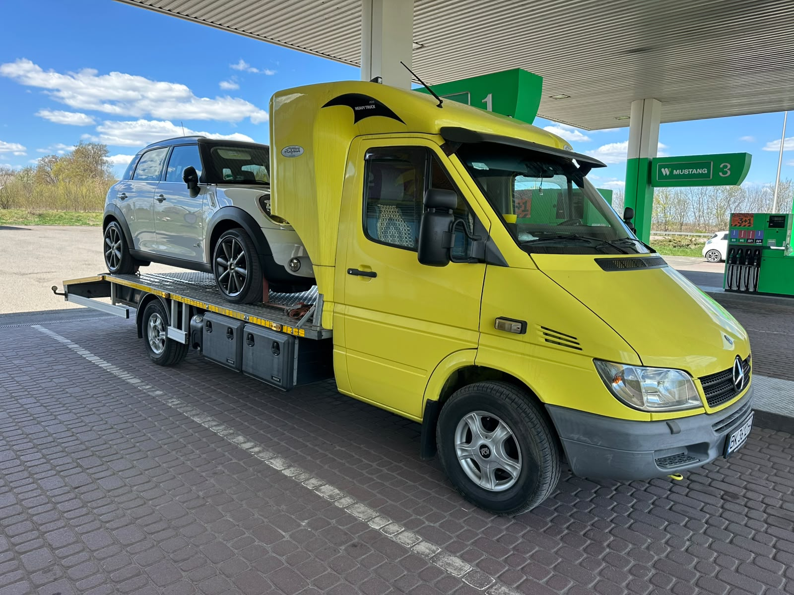
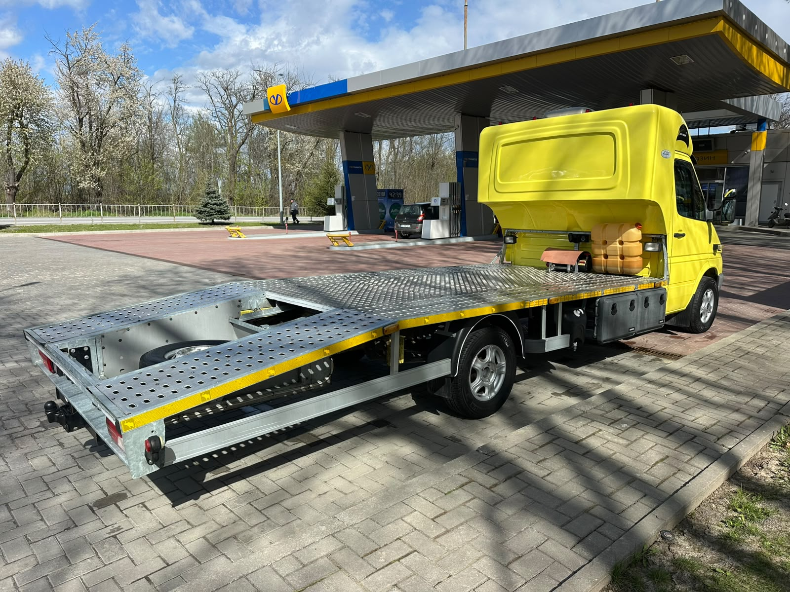
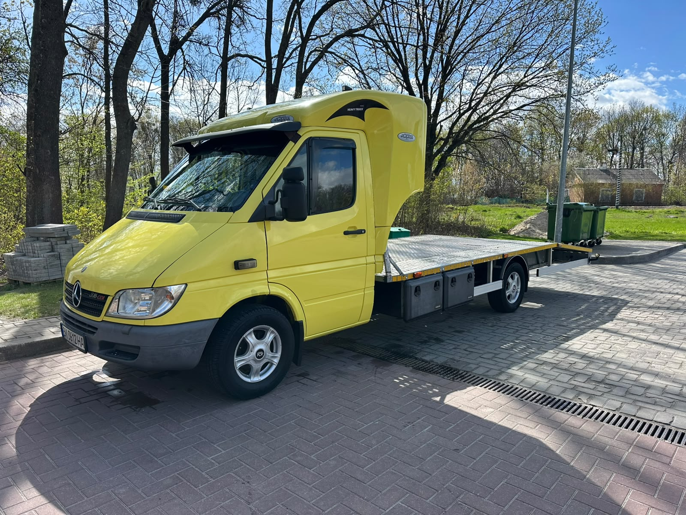
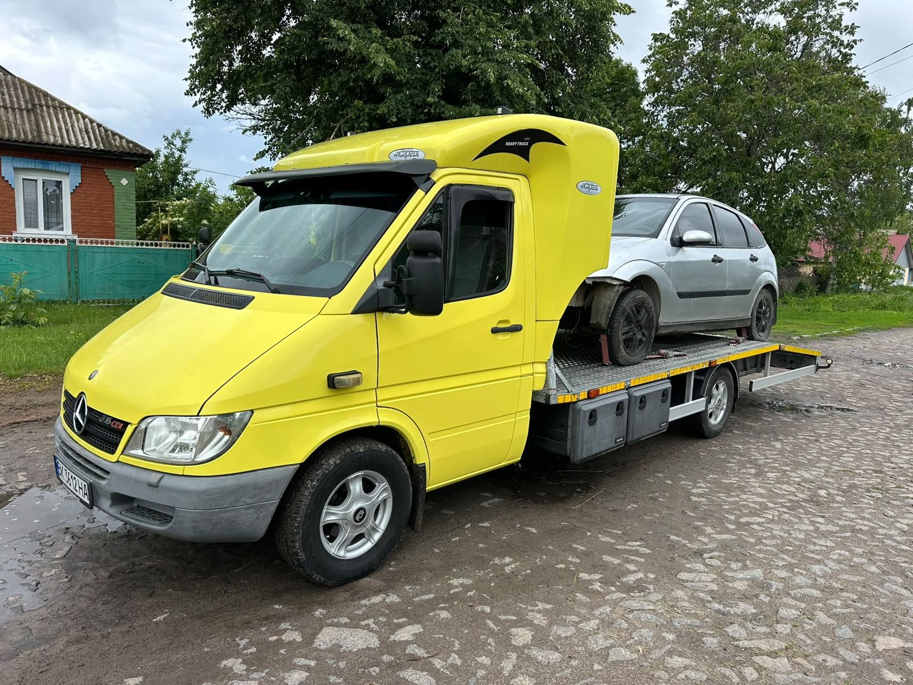

Після ДТП
Завантаження пошкодженого авто, фіксація на платформі та доставка до сервісу або іншої адреси.

Евакуатор 24/7 +380 97 334 00 14
Виїзд щодня • Гайсин, Вінницька область, вул. Центральна, 70А (ТЦ Європейський)
Швидко заберемо авто з дороги, двору, СТО чи після ДТП. Платформа для легкових авто та кросоверів, акуратне кріплення і зв'язок напряму з водієм.
Що робимо
Підкажемо по маршруту, швидко зорієнтуємо по подачі та перевеземо авто туди, де вам потрібно: додому, на СТО, шиномонтаж або стоянку.
Завантаження пошкодженого авто, фіксація на платформі та доставка до сервісу або іншої адреси.
Заберемо машину з дороги, парковки чи двору, якщо вона не може їхати своїм ходом.
Перевезення легкових авто, кросоверів та невеликих комерційних авто до майстерні.
Допоможемо перевезти авто між населеними пунктами, якщо потрібна акуратна платформа.
Техніка
Платформа підходить для щоденних задач: перевезення легкових авто, кросоверів, авто після поломки або після ДТП. Машину кріпимо на платформі, щоб дорога була спокійною і для власника, і для авто.

Як викликати
Назвіть місце, модель авто та куди потрібно відвезти.
Водій підкаже по часу подачі та деталях завантаження.
Авто завантажують, фіксують і перевозять до потрібної адреси.
Фото евакуатора
Реальні фото платформи, завантаження та перевезень, щоб одразу було видно стан техніки.





Контакти
Дзвоніть напряму. Для швидкого розрахунку скажіть, де знаходиться авто, куди його везти та чи може воно заїхати на платформу самостійно.
Гайсин, Вінницька область, вул. Центральна, 70А (ТЦ Європейський)